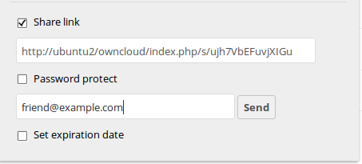
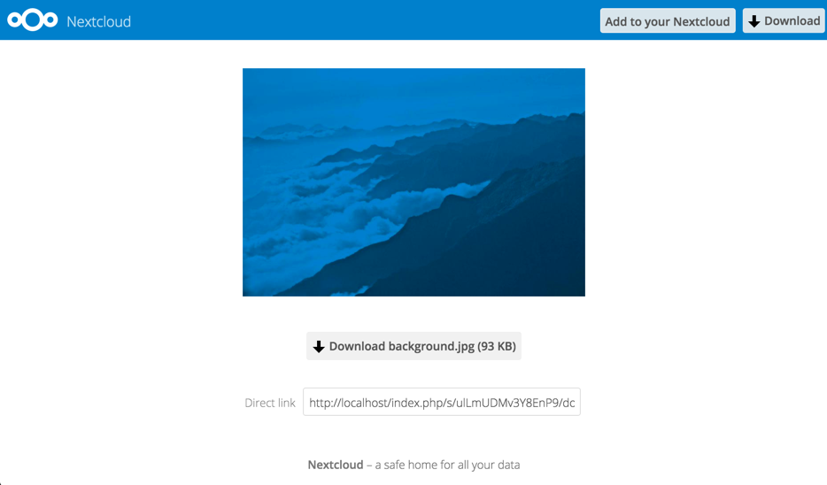

Gebruik van Federation Shares
Federation Sharing stelt je in staat om bestand shares te koppelen vanaf externe Nextcloud servers, waardoor je in feite jouw eigen cloud van Nextclouds kan creëren. Je kan directe share links maken met gebruikers op andere Nextcloud servers.
Het aanmaken van een nieuwe Federation Share
Federation sharing is standaard ingeschakeld op nieuwe of bijgewerkte Nextcloud installaties. Volg deze stappen om een nieuwe share aan te maken met andere Nextcloud of ownCloud 9+ servers:
1. Go to your Files page and click the Share icon on the file or directory
you want to share. In the sidebar enter the username and URL of the remote user
in this form: <username>@<oc-server-url>. The form automatically confirms the address
that you type and labels it as “remote”. Click on the label.

2. When your local Nextcloud server makes a successful connection with the remote Nextcloud server you’ll see a confirmation. Your only share option is Can edit.
Klik op de knop Delen om te zien met wie je jouw bestand hebt gedeeld. Op elk gewenst moment kan je jouw gelinkte share verwijderen door op het pictogram van de vuilnisbak te klikken. Hierdoor wordt alleen de share ontkoppeld en worden geen bestanden verwijderd.
Het aanmaken van een nieuw Federated Cloud Share via e-mail
Gebruik deze methode wanneer je deelt met gebruikers op ownCloud 8.x en ouder.
Wat als je de gebruikersnaam of URL niet kent? Dan kan je Nextcloud de link voor jou laten maken en deze e-mailen naar je ontvanger.

Wanneer je ontvanger jouw e-mail ontvangt, zal hij/zij een aantal stappen moeten ondernemen om de share link te voltooien. Eerst moeten ze de link openen die je hen in een webbrowser hebt gestuurd en vervolgens op de knop Toevoegen aan uw Nextcloud klikken.

De knop Toevoegen aan je Nextcloud verandert in een formulierveld en jouw ontvanger moet in dit veld de URL van zijn Nextcloud of ownCloud-server invoeren en op de retourtoets drukken, of op de pijl klikken.

Vervolgens zullen ze een dialoog zien met de vraag om te bevestigen. Het enige wat ze hoeven te doen is op de knop Delen op afstand toevoegen te klikken en ze zijn klaar.
Verwijder je gelinkte share op elk gewenst moment door te klikken op het prullenbak icoon. Hierdoor wordt de share alleen ontkoppeld en worden geen bestanden verwijderd.